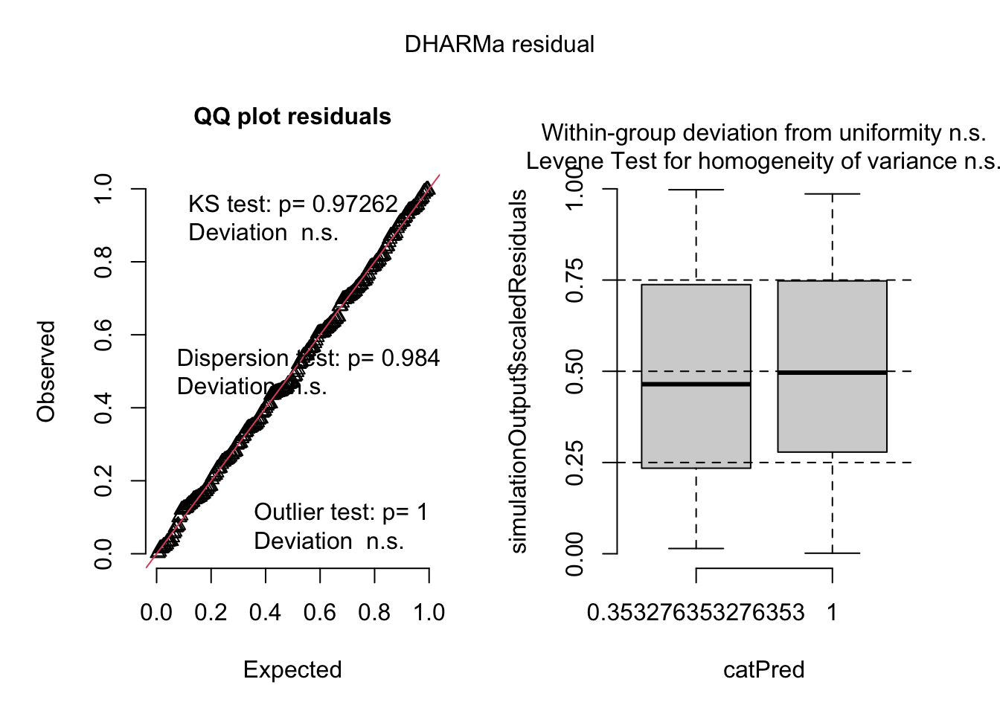
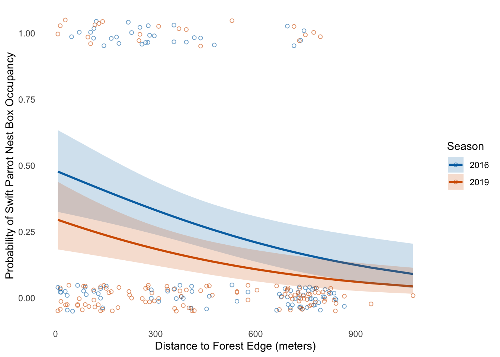

#load packages and reading data
library(tidyverse)
library(janitor)
library(lubridate)
library(dplyr)
library(ggplot2)
library(DHARMa)
library(MuMIn)
library(ggeffects)
library(here)
#reading csv data file for problem 2
sst <- read.csv (here("Data/SST_sb_channel.csv"))
#reading csv data file for problem 3
nest_boxes <- read_csv (here("Data/occdist.csv"))final
[Github Repo](https://github.com/carlaaa02/ENVS-193DS_spring-2025_final)
set up
Problem 1. Research Writing
a. Transparent statistical methods
In part 1, they used a correlation test. They most likely used Pearson correlation test since both variables are continuous and they are assessing the linear relationship between distance from headwater and annual total nitrogen load. But there is not enough information to confidently determine if they used Pearson or Spearman correlation test.
In part 2, they used one-way ANOVA. They compared the average in nitrogen load (mean) with 5 variables. ANOVA test is used to test for statistical significant differences between the means of 2 or more groups.
b. More information needed
- Summary statistics
adding summary statistics like the mean, standard deviation and sample size can helps us understand the magnitud and variability of the nitrogen loads for each source. For example the mean would gives us information about how much each source contributes.
- Performing Tukey HSD
This test would help us identify which nitrogen sources is significantly different when we compare them since ANOVA tells us there is significant difference but not from which sources, this test would helps us identify that.
c. Suggestion for rewriting
Part 1:
We found a statistically significant positive relationship between distance from headwater and total nitrogen load, suggesting that nitrogen accumulates downstream, possibly due to agricultural and urban inputs.
(Pearson correlation test: r = [correlation coefficient], p = 0.03, α = 0.05)
Part 2:
Average nitrogen load differed significantly among the five nitrogen sources, indicating that some sources contribute more nitrogen than others.(One-way ANOVA: F = [F statistic], df = [degrees of freedom], p = 0.02, α = 0.05).
Problem 2. Data visualization
a. cleaning and summarizing
#creating new object for clean data
sst_clean <- sst |>
mutate(date = ymd(date)) |> # convert data column into different data format
mutate(
year = year(date), #extracting year and data
month = month(date, label = TRUE) #use abbreviated month labels
) |>
#Filter for the years needed for the figure (2018–2023)
filter(year >= 2018, year <= 2023) |>
#Group by year and month
group_by(year, month) |>
#Summarizing data by calculating the mean sst for each year-month
summarise(
mean_monthly_sst = mean(temp, na.rm = TRUE),
.groups = "drop"
)
#display 5 random rows from the cleaned dataset
slice_sample(sst_clean, n = 5)# A tibble: 5 × 3
year month mean_monthly_sst
<dbl> <ord> <dbl>
1 2020 Oct 19.0
2 2022 Dec 14.8
3 2018 Oct 18.5
4 2018 Dec 15.6
5 2018 Jan 15.0str(sst_clean)tibble [72 × 3] (S3: tbl_df/tbl/data.frame)
$ year : num [1:72] 2018 2018 2018 2018 2018 ...
$ month : Ord.factor w/ 12 levels "Jan"<"Feb"<"Mar"<..: 1 2 3 4 5 6 7 8 9 10 ...
$ mean_monthly_sst: num [1:72] 15 14.3 13.5 12.8 13.6 ...b. Visualize the data
# creating the plot
ggplot(sst_clean, aes(x = month, y = mean_monthly_sst, group = factor(year), color = factor(year))) +
geom_line(size = 1) + # adding line geometry
geom_point(size = 2) + # adding point geometry
scale_color_manual(
values = colorRampPalette(c("yellow", "red"))(6), #yellow to red color gradient
name = "Year"
) +
labs(
x = "Month", # x-label
y = "Mean monthly sea surface temperature (°C)" # y-label
) +
theme_minimal(base_size = 14) + #clean base theme
theme(
panel.border = element_rect(color = "gray", fill = NA, size = 1), #adding panel border
panel.background = element_blank(), #blank background
legend.position = c(0.11, 0.8), #adding legend inside the panel
legend.title = element_text(size = 12),
legend.text = element_text(size = 10),
panel.grid = element_blank(), # getting rid of grid lines
axis.ticks.length = unit(0.1, "cm"), #adding tick marks outside
axis.ticks = element_line(color = "black") #black tick marks
)
Problem 3. Data Analysis
a. Response Variable
The 1s mean that the nest box was occupied by a bird while 0s mean that the nest box was not occupied by a bird.
b. Purpose of Study
The main difference is that Swift Parrots are a critically endangered native species and the target of the conservation effort, while Common Starlings and Tree Martins are nontarget species that also use the nest boxes. In the context of this study we want to know whether these boxes effectively support Swift Parrots or if they are being occupied by competing species.
c. Difference in “seasons”
The two “seasons” in the study refer to the years 2016 and 2019, when nest box occupancy was monitored. These seasons differ in terms of Swift Parrot breeding activity, with 2016 being a low breeding activity year and 2019 a high breeding activity year, which likely influenced nest box use by the target and nontarget species.
d. Table of Models
| Model number | Season | Distance to Forest Edge | Model Description |
|---|---|---|---|
| 1 | Null Model: only intercept | ||
| 2 | X | X | Saturated Model: both predictors |
| 3 | X | Includes only season as predictor | |
| 4 | X | Includes on distance to forest edge as predictor |
e. Run the Models
nest_boxes_clean <- nest_boxes |>
clean_names() # Model 1: Null model (intercept only)
model1 <- glm(
sp ~ 1,
family = binomial,
data = nest_boxes_clean
)
# Model 2: Saturated model (season + distance)
model2 <- glm(
sp ~ season + edge_distance,
family = binomial,
data = nest_boxes_clean
)
# Model 3: Season only
model3 <- glm(
sp ~ season,
family = binomial,
data = nest_boxes_clean
)
# Model 4: Distance to forest edge only
model4 <- glm(
sp ~ edge_distance,
family = binomial,
data = nest_boxes_clean
)f. Check the diagnostics
par(mfrow = c(2,2))
plot(simulateResiduals(model1))
plot(simulateResiduals(model2))
plot(simulateResiduals(model3))
plot(simulateResiduals(model4))
g. Select the best model
AICc(model1,
model2,
model3,
model4) |>
arrange(AICc) df AICc
model2 3 226.3133
model4 2 229.6716
model3 2 236.3744
model1 1 238.8318The best model as determined by Akaike’s Information Criterion (AICc) was the model 2, including both season and distance to forest edge as predictors of Swift Parrot nest box occupancy. This model (AICc = 226.31) outperformed models that included only distance to forest edge (AICc = 229.67), only season (AICc = 236.37), or no predictors (null model, AICc = 238.83). This suggests that both the year of monitoring and the nest box’s proximity to the forest edge influence the probability that a nest box is occupied by a Swift Parrot.
h. Visualize the model predictors
model2_predictions <- ggpredict(
model2,
terms = c("edge_distance [all]", "season") #predictors
) |>
rename(edge_distance = x,
season = group) #renaming columns for clarity
# preparing data
pred_data <- model2_predictions |>
rename(predicted_prob = predicted, # renaming columns for clarity
conf_low = conf.low,
conf_high = conf.high)
ggplot() +
geom_jitter(data = nest_boxes_clean, #plotting raw data points
aes(x = edge_distance, y = sp, color = factor(season)),
width = 0, height = 0.05, alpha = 0.6, shape = 21) +
geom_line( #Model predicted prob lines for each season
data = pred_data,
aes(x = edge_distance, y = predicted_prob, color = factor(season)), linewidth = 1) +
geom_ribbon( #shaded area for 95% CI
data = pred_data,
aes(x = edge_distance, ymin = conf_low, ymax = conf_high, fill = factor(season)),
alpha = 0.2, color = NA) +
#costumizing colors manually
scale_color_manual(values = c("2016" = "#0072B2", "2019" = "#D55E00")) +
scale_fill_manual(values = c("2016" = "#0072B2", "2019" = "#D55E00")) +
labs(x = "Distance to Forest Edge (meters)", #x-axis
y = "Probability of Swift Parrot Nest Box Occupancy", #y-axis
color = "Season",
fill = "Season") +
theme_minimal() + #minimal theme for clean appearance
theme(panel.grid.major = element_blank(), # no grid lines
panel.grid.minor = element_blank()) # no grid lines
j. Write Caption for Figure
The figure shows model 2 predicted probabilities of nest box occupancy for Swift Parrots across two seasons (2016 and 2019), with 95% confidence intervals, based on distance to the forest edge. Points represent individual observations of box occupancy (1 = occupied, 0 = unoccupied). The model shows decreasing occupancy likelihood with increasing distance, with higher probabilities in 2016.
Dataset from Stojanovic, D., Owens, G., Young, C.M., Alves, F. and Heinsohn, R. 2021. “Do nest boxes breed the target species or its competitors? A case study of a critically endangered bird.” Restoration Ecology. DOI: 10.1111/rec.13319
j. Calculate Model Predictions
predicted_values <- ggpredict(
model2, #model object
terms = c("edge_distance [0,900]", "season") #predictors
# specify values for edge_distance and all levels of season
)
# display output
predicted_values# Predicted probabilities of sp
season: 2016
edge_distance | Predicted | 95% CI
--------------------------------------
0 | 0.48 | 0.33, 0.64
900 | 0.12 | 0.06, 0.24
season: 2019
edge_distance | Predicted | 95% CI
--------------------------------------
0 | 0.30 | 0.18, 0.44
900 | 0.06 | 0.03, 0.13k. Interpret your Results
The predicted probability of Swift Parrot nest box occupancy was highest at the forest edge (0 m), with occupancy decreasing significantly at 900 meters away. In 2016, the predicted probability at 0 m was 0.48 (95% CI: 0.33–0.64), compared to just 0.12 (CI: 0.06–0.24) at 900 m. In 2019, the probability dropped from 0.30 (CI: 0.18–0.44) at the edge to 0.06 (CI: 0.03–0.13) at 900 m. As shown in part h, the probability of occupancy decreases with distance from the forest edge in both seasons, with consistently lower values in 2019. This trend likely reflects ecological preferences of Swift Parrots, who may favor areas near forest edges due to better access to nesting resources, food, or shelter, and suggests that habitat fragmentation or edge effects may significantly influence their nesting behavior.
Problem 4. Effective and exploratory visualizations
a. Comparing Visualizations
How are the visualizations different from each other in the way you have represented your data?
Each visualization differs in both format and style. In Homework 2, I used traditional plots such as a boxplot and a scatterplot to represent how my studying duration varies with variables like work attendance and sleep hours. In Homework 3 included a more diverse mix, a summary table showing mean studying duration across different background noise levels, and two hand drawn sketches that creatively visualized the same data using metaphors such as fish bowls and a tree with birds to convey emotional and contextual meaning to my data.
What similarities do you see between all your visualizations?
They all use the same data, and in all I am trying to show how focus duration is affected by other variables. Each one tries to show how studying time changes depending on things like whether I went to work or how noisy the environment was, sleep hours.
What patterns (e.g. differences in means/counts/proportions/medians, trends through time, relationships between variables) do you see in each visualization? Are these different between visualizations? If so, why? If not, why not?
The patterns are similar in all of them. In terms of results there is a clear similarity on data results when I compare between the traditional visualization and sketches show the same results. Even though the styles are different, the message stays the same. The charts show this more directly, while the sketches add more feeling and story to the data. The most significant relationship that observed from my data was that attending work impacts my studying duration. On days that I go to work I study less to none hours compare to days I don’t go to work.
What kinds of feedback did you get during week 9 in workshop or from the instructors? How did you implement or try those suggestions? If you tried and kept those suggestions, explain how and why; if not, explain why not.
Due to work reasons i did not attended workshop 9 I was not able to get any feedback on my effective visualization.